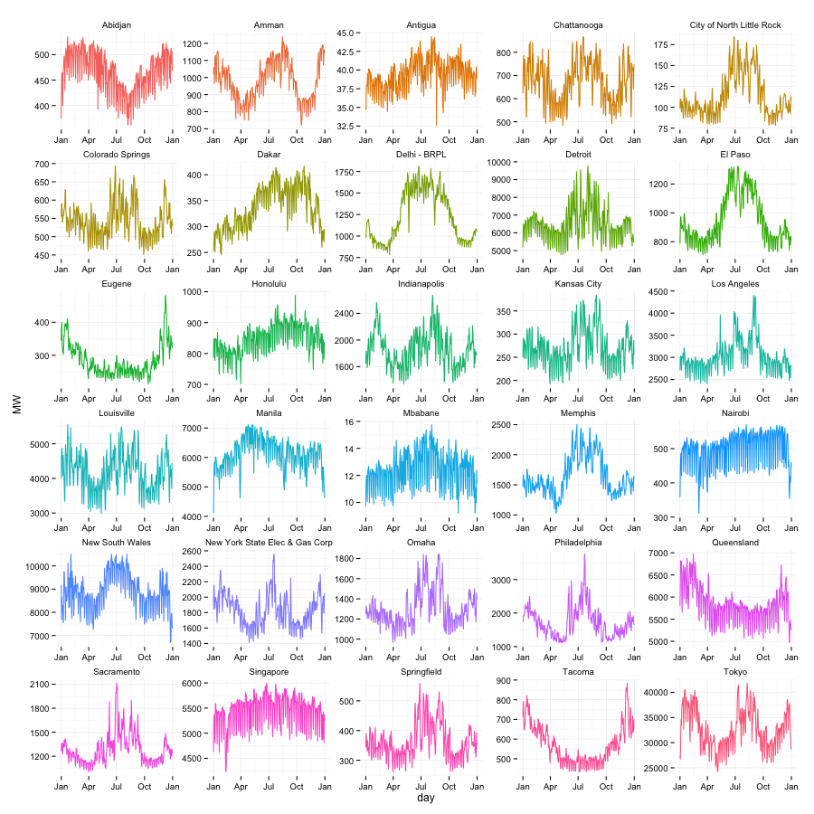
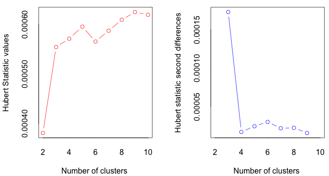
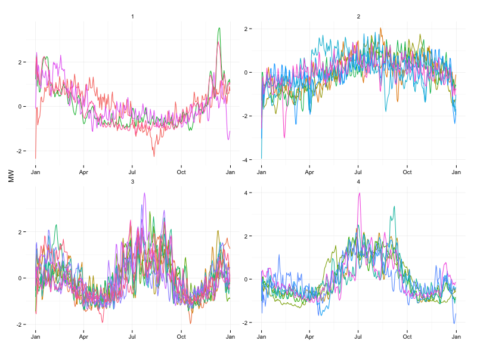
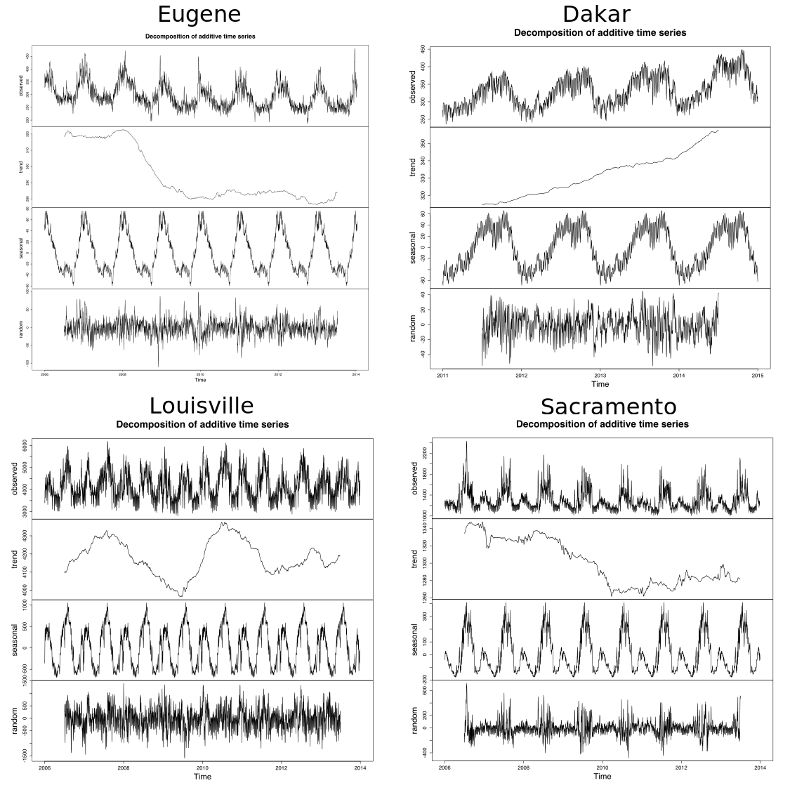
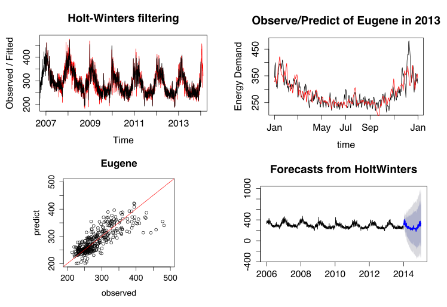
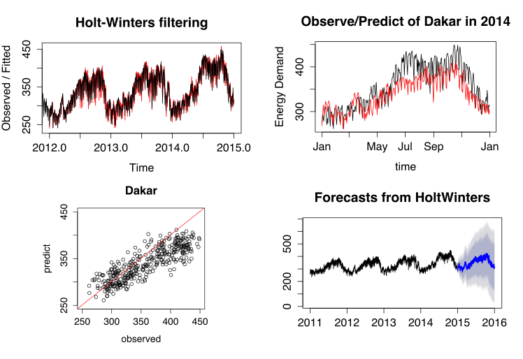
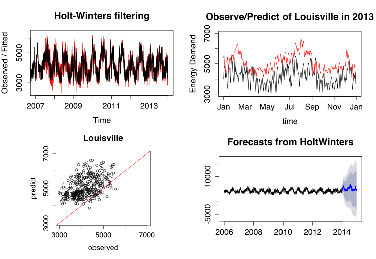
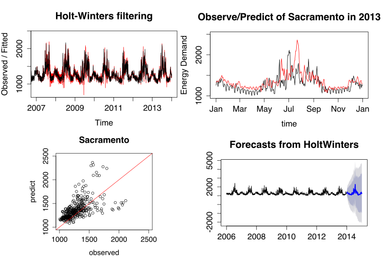
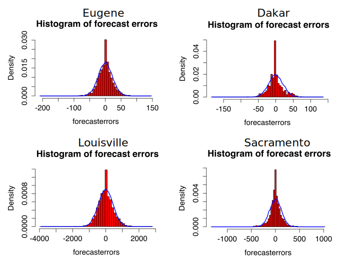

This paper and its visualizations can be found at http://denistanwh.github.io.
Global energy demand is expected to rise by 37% from 2014 to 2040 (IEA, 2014). However, three quarters of the global energy supply in 2040 will still be fossil-based (IEA, 2014), exacerbating anthropogenic climate change as we attempt to meet this expanding demand. While cities will drive most of the predicted demand expansion (The New Climate Economy, 2014), they can be leading advocates on reducing per capita consumption to mitigate climate change (C40, n.d.). To this end, there are numerous global and regional networks that bring city policy makers together to facilitate the sharing of best practices to reduce their respective energy intensities. These include C40 (C40, n.d.), World Cities Network (WCN, 2015), ICLEI (ILCEI, n.d.), and many others.
Cross-city collaboration on reducing enegy demand tends to be politically- and economically-driven rather than data-driven. For instance, Chinese cities, despite having vastly different climate, have attempted to glean best practices from Singapore in the energy domain (WEF, 2012). Best practices gleaned from political and economic partners, while certainly of value, may be less effective due to the intrinsic differences in factors driving energy demand. Notably, climatic differences are known to have significant impact on building heating and cooling loads (Wan, Li, Liu, & Lam, 2011). Thus, there is value in identifying clusters of cities with similar energy demand patterns to make the sharing of best practices more efficient. This provides a data-driven perspective to cross-city collaboration that is intended to augment, not supercede current political and economic networks. This project builds on the foundation of energy profile clustering (Rhodes et al., 2014).
Energy demand is a function of many variables, including demographics, climate, and development stage. Much work has been done on energy demand forecasting, resulting in increasingly realistic but complex models. This paper presents a data-driven approach to identifying groups of cities with similar demand pattern to optimize collaboration. We also forecast and visualizes short-term energy demand for one sample city of each group to ascertain if demand forecasting works better with some demand profiles than others.
Our approach is agnostic to the underlying structural factors driving demand and deals only with the empirical demand pattern, using a simple clustering method for grouping and well-cited time-series method for forecasting. This project builds upon the work of Cohen, Torbey, Piccirilli, Tian, & Modi (2015) on global trends in urban heating and cooling at The Sustainable Engineering Lab of Columbia University. We use their dataset of electrical energy demand from 43 localities (39 cities and 4 states) around the world. On this basis, we limit our scope to electrical energy. Their project and the associated dataset is obtainable from: https://github.com/ecohen4/energy.
We visualized the work through a three step procedure using d3.js (Bostock, 2013). First, we present a world map centered in the Pacific to depict the cities we considered for this project (see Figure 4). Second, we zoom in to the 4 groups of cities and present their average daily energy demand over a period of 365 days. Each group of cities are visualized in a chart (Figures 5 to 8). Third, we further zoom in to the city level and visualize the energy forecast for one sample city in each of the 4 groups. This is hidden unless the reader decides to interact with the paper by clicking the Visualize button. This cascade of visualizations emphasizes the “drill-down” technique espoused by Schneiderman (1996) in his seminal paper on the visual information seeking mantra. This way, the first visualization provides an overarching overview before the second and third visualization take reader into greater and greater detail. At the same time, we have kept the visualizations minimalist to maximize data-ink and minimize chart-junk (Tufte, 1983).
To group localities, we apply cluster analysis. Clustering involves grouping objects in such a way that objects in the same group are more similar, by some pre-determined measure, to each other than to those in other groups. This is a fundamental concept in exploratory data mining, and a frequently-used method for statistical data analysis in many fields such as machine learning and pattern recognition (Kaufman & Rousseeuw, 2009).
One particular method of implementing cluster analysis is K-means clustering (Witten & Hastie, 2014). It is a simple approach to group data into K distinct, non-overlapping clusters. The following algorithm depicts K-means clustering:
We implemented cluster analysis using a three-step procedure: pre-processing, grouping, and analysis.
First, we pre-processed and trimmed the raw dataset from an unbalanced panel of energy demand data of 48 (43 distinct energy demand profiles as we have data from 6 measurement locations within Delhi, India) localities. We do this by dropping energy demand profiles that meet any of the four criteria:
The trimmed dataset has 30 localities (28 cities and 2 states in Australia) remaining. For cities, we will refer to the 30 localities as cities. The energy demand data, in MW, was also aggregated from the half-hourly level to the daily-level to reduce the size of the dataset for quick computations. Data at the half-hourly level is unnecessarily granular for cluster analysis that spans a full calendar year. We then normalized energy demand by subtracting the mean and dividing the result by the standard deviation. This normalization ensures that data from all cities are mean zero and standard deviation one, making it possible to compare. The trimmed dataset is depicted below in Figure 1.
Figure 1: Plot of Average Daily Energy Demand Data of 30 Cities Over 1 Calendar Year

Second, we group the data from 30 cities into four groups (clusters) using the aforementioned K-means algorithm. We implemented this using the default kmeans() function in the {stat} package of the open-sourced statistical software, R (version 3.0.2).
We note various issues associated with the method applied. First, we are aware that groups obtained using the k-means method represent local rather than global optimum. Hence, soltuions obtained from this method may be dependent on the initial condition and number of iterations. To reduce the impact of this limitation, we chose to increase the number of iterations during computation to obtain stable clustering results. Specifically, we set the iteration count to 20 and simulated 10 different starting points. The result is convergent as expected. Secondly, in this approach, as in most clustering analyses, the number of clusters is pre-specified. Hence, prior knowledge of the number of groups is required. Mathematically, there are multiple tests that could determine the optimal number of groups, with different methods providing slightly different results. In this paper, we use the R function NbClust from package {NbClust} to obtain the optimal number of clusters by computing the Hubert Statistic for the clusters as well as the second differences. The Hubert Statistic is a similarity function used to determine effectiveness of clustering (Zaki, 2012). The results of the NbClust analysis is provided in Figure 2. From the test results, the Hubert Statistic performance is acceptable with three or more clusters (groups). We visually inspect the data and settled on four clusters.
Figure 2: Results of NbClust Test

Figure 2 is visualized with the following code in R:
res <- NbClust(data.6, diss = NULL, distance = "euclidean", min.nc = 2, max.nc = 10, method = "kmeans", index = "hubert")
Finally, we interpret the results from clustering. We explore if algorithmic results correspond with our intuitiion based on the geographic location and local climate of the various cities. This will be discussed in the Result & Discussion section.
Through clustering, we obtained the following four clusters.
Figure 3 visually depicts the result of clustering.
Figure 3: Visualization of the 4 Clusters of Cities

From the figure, it is clear that the cities have been appropriately clustered according to the shape of their daily energy demand over the period of a single calendar year. Cluster 1 cities appear to have energy demand peak in January and trough in August. Cluster 2 cities appear to have a relatively flat energy demand profile throughout the year. Cluster 3 cities appear to have 2 peaks in energy demand per year in both January and August. Finally, cluster 4 cities appear to also have 2 peaks but the peak in January is much less pronounced.
The map in Figure 4 shows the geographical location of these 30 cities.
Figure 4: Geographic Location of 30 Cities
Figure 5: Cluster 1 Normalized Energy Demand Plot Over 1 Year
Recall that, energy Demand is normalized by subtracting its mean and dividing the result by its standard deviation over the duration considered.
Cities in Cluster 1 are: Abidjan, Eugene, Tacoma, Queensland.
In this cluster, yearly energy profile has a 'U' shape, with the peak in January (boreal winter, austral summer) and a smooth valley in August (boreal summer, austral winter). Intuitively, this pattern should correspond with cities of one of two specifications:
Eugene and Tacoma are both located in northwestern USA. Their proximity to the Pacific Coast mean that they are affected by warm currents, causing their seasons to be marked by warm, dry summers and wet, cool-to-chilly winters. Over the course of a year, their temperature typically varies from 38°F to 76°F and is rarely below 31°F or above 85°F. Hence, Tacoma and Eugene fall into the first of the two aforementioned types of cities.
Queensland is located in Australia in the southern hemisphere. The strong summers and mild winter mean that it corresponds to the second type of cities.
Abidjan, however, seems to be an outlier. Abidjan is a tropical city which should not have a ‘U’ shaped energy demand profile. This could potentially have been caused by the similarity of ‘U’ shaped profiles and flat profiles, constituting a limitation to the k-means method of clustering cities.
Figure 6: Cluster 2 Normalized Energy Demand Plot Over 1 Year
Cities in Cluster 2 are: Dakar, Honolulu, Manila, Mbabane, Nairobi, Singapore, Antigua.
In this cluster, the energy demand profile appears to be flat. In other words, the seasonal fluctuations in energy demand is much less pronounced. Intuitively, this patterns should correspond to cities with one of three specifications:
Looking into the data, Singapore is near the equator and, thus, consistently in need of cooling year round with no need for heating. Nairobi has elevation in excess of 1000m and require minimal cooling and heating due to their temperate climates and cool nights (Cohen, Torbey, Piccirilli, Tian, & Modi, 2015). In addition, the other 4 cities all located between -30 degrees to 30 degrees latitude and have little need for heating or cooling. Hence, the relatively flat energy demand profile makes intuitive sense.
Figure 7: Cluster 3 Normalized Energy Demand Plot Over 1 Year
Cities in Cluster 3 are: Amman, Chattanooga, Colorado Springs, Kansas City, Louisville, New York, Omaha, Springfield, Tokyo, Detroit, Indianapolis, Philadelphia.
In this cluster, the energy demand profile appears to have 2 peaks, one during summer and one during winter. Intuitively, this pattern should correspond with cities some electrical heating during winter and more dominant cooling during summer.
All cities in this cluster are located between the 30 and 60 degrees latitude. This supports the hypothesis that both heating and cooling is needed at different times of the year because localities at these lattitudes have distinct seasons.
Figure 8: Cluster 4 Normalized Energy Demand Plot Over 1 Year
Cities in Cluter 4 are: City of North Little Rock, El Paso, Los Angeles, Memphis, Sacramento, Delhi - BRPL, New South Wales.
In this cluster, yearly energy pattern turns out to be “N” style, with the much less pronounced peak in January (boreal winter, austral summer) when compared with Cluster 3 and a peak in August (boreal summer, austral winter). Intuitively, this pattern should correspond with cities of one of two specifications:
Geographically, North Little Rock, El Paso, Memphis, Sacramento and Los Angeles are all in the southern and western region of USA. These cities have less harsh winters than those of Cluster 3. Delhi, although located separated from other cities in this group, occupy a similar latitude, and hence, has a similar climate. These cities all correspond to the second specification above. For New South Wales, its energy demand is likely driven by that of its most populated area: Sydney. New South Wales lies in the southern hemisphere and corresponds to the first speciication above.
All in all, the clustering results generally correspond to our intuitive understanding of the electrical energy demand profiles of the various cities.
After clustering energy data into four groups, we turn to forecasting. For forecasting, we trim the original dataset to the 30 cities used in the clustering analysis but retain multiple years of energy data for all cities. We also aggregated the half-hourly data to the daily level to remove unnecessary granularity.
The energy demand data shows periodicity and can be said to have three components: seasonal, trend, and random component. Seasonality is defined as the tendency of time-series data to exhibit behavior that repeats itself in regular intervals. If the seasonal component is present, it can be additive (where the size of the seasonal component is constant) or multiplicative (where the size of the seasonal component is varies proportionally with the level of the trend). Visual inspection seems to indicate additive seasonablity (see Figure 3). Trend represents the non-cyclical pattern of the data. The random component is the residual after seasonality and trend have been removed. Using R (Version 3.0.2), we applied the decompose() function from the {forecast} package in to a sample city from each of the four clusters and plotted the outcome in Figure 9.
Figure 9: Decomposition of Daily Energy Demand of Eugenia, Dakar, Louisville, and Sacramento

Holt-Winters (Chatfield & Yar, 1988) is a forecasting method for dealing with time series data with both trend and seasonal components. It is an extension of the Single Exponential Smoothing method. The Holt-Winters method has two versions, additive and multiplicative, the use of which depends on the characteristics of the particular time series. We use the additive method since the seasonality appears to be additive. Holt-Winters predictions are obtained as a weighted average of past observed values where the weights decline exponentially so that the most recent observations contribute to the forecast more than the values of earlier observations. The additive formula of this model is as follow:
\[ \begin{align} & s_{i}=\alpha(x_{i}-p_{i-k})+(1-\alpha)(s_{i-1}+t_{i-1}) \\ & t_{i}=\beta(s_{i}-s_{i-1})+(1-\beta)t_{i-1} \\ & p_{i}=\gamma(x_{i}-s_{i})+(1-\gamma)p_{i-k} \\ \end{align} \]
Here, \(\alpha \) represents the data smoothing factor, \(\beta \) represents thentrend smoothing factor, and \(\gamma \) represents the seasonal change smoothing factor. The values of all three factors are between 0 to 1. K is the time period. \(s_{0} = x_{0}\), \(t_{0}=x_{1}-x_{0}\).The prediction formula follows:
\[ \begin{align} x_{i+h}=s_{i}+ht_{i}+p_{i-k+(h\,mod\,k)} \end{align} \]
We picked Eugene, Dakar, Louisville, and Sacramento to represent Cluster 1, 2, 3, and 4 respectively. Through application of the Holt-Winters forecasting algorithm, we obtained a model for each of the four cities. Before applying the respective models for out-of-sample forecasting, we tested took a truncated segment of the data to run in-sample forecasts to determine the efficacy of the model. For example, although we have energy data for Eugene from 2006 to the end of 2013, we predicted energy demand for 2013 using the truncated Eugene dataset that has 2006 to end of 2012 data. Comparing between our model results and the actual energy demand data, we quantified the accuracy and perfomance of our model for the four cities using the RMSE. The results are summarized in Table 1. More detailed results are found in Figures 10 to 13.
We then forecasted a full calendar year of energy data and analyzed the model fit using the Box-Ljung residual test. The results are summarized in Table 2.
Table 1: RMSE on Test Data
| City | Cluster | RMSE |
|---|---|---|
| Eugene | 1 | 29.55 |
| Dakare | 2 | 32.37 |
| Louisville | 3 | 1055.32 |
| Sacramento | 4 | 199.48 |
Table 2: Summary of Box-Ljung Test Results
| City | Cluster | X-squared | Degree of Freedom | P-value |
|---|---|---|---|---|
| Eugene | 1 | 1365.707 | 20 | 2.2e-16 |
| Dakar | 2 | 1171.423 | 20 | 2.2e-16 |
| Louisville | 3 | 1926.477 | 20 | 2.2e-16 |
| Sacramento | 4 | 915.5914 | 20 | 2.2e-16 |
We present the forecasting results of each of the four cities separately, below. The first cluster’s representative, Eugene exhibits the 'U' profile with a distinct upward trend (see Figure 10). From the RMSE in Table 1, of the four cities, the Holt-Winters forecasting model is most effective for Eugene (lowest RMSE).
Figure 10: Holt-Winters Forecast for Eugene (Cluster1)

Note: Original data spanned 4 calendar years from 2010 to end of 2013. Top left chart depicts comparison between fitted values from the model (red) and original data (black) for the entire dataset is available. Top right chart depicts the comparison between the observed energy demand (black) and the predicted energy demand (red) using the truncated dataset (2010 to end 2012). Bottom left chart depicts the same comparison as the top right chart, albeit as a scatter plot. Bottom right chart depicts the 365-day forecast of daily energy demand of Eugene by applying the model on the full dataset.
Interact with the data by clicking below:
The second cluster’s representative, Dakar, has both a general upward trend and a relatively flat profile though a seasonal (cyclical) pattern in the middle of the year can be observed. From the RMSE in Table 1, of the four cities, the Holt-Winters forecasting model is highly effective for Dakar (second lowest RMSE) but not as effective as for Eugene of Cluster 1.
Figure 11: Holt-Winters Forecast for Dakar (Cluster 2)

Note: Original data spanned 4 calendar years from 2011 to end of 2014. Top left chart depicts comparison between fitted values from the model (red) and original data (black) for the entire dataset is available. Top right chart depicts the comparison between the observed energy demand (black) and the predicted energy demand (red) using the truncated dataset (2011 to end 2013). Bottom left chart depicts the same comparison as the top right chart, albeit as a scatter plot. Bottom right chart depicts the 365-day forecast of daily energy demand of Eugene by applying the model on the full dataset.
Interact with the data by clicking below:
The third cluster’s representative, Louisville, has significant periodicity on a yearly basis (see Figure 12). As is the case for cities in Cluster 3, Louisville has two energy demand peaks, a more pronounced peak in the summer and a less pronounced peak in the winter. From the RMSE in Table 1, of the four cities, the Holt-Winters forecasting model is least effective for Louisville (highest RMSE). In fact, the RMSE for Louisville is more than 30 times higher than that of Dakar (Cluster 2) and Eugene (Cluster 1).
Figure 12: Holt-Winters Forecast for Louisville (Cluster 3)

Note: Original data spanned 3 calendar years from 2011 to end of 2013. Top left chart depicts comparison between fitted values from the model (red) and original data (black) for the entire dataset is available. Top right chart depicts the comparison between the observed energy demand (black) and the predicted energy demand (red) using the truncated dataset (2011 to end 2012). Bottom left chart depicts the same comparison as the top right chart, albeit as a scatter plot. Bottom right chart depicts the 365-day forecast of daily energy demand of Eugene by applying the model on the full dataset.
Interact with the data by clicking below:
The fourth cluster’s representative, Sacramento, shows a large peak during the boreal summer. Sacramento’s energy demand profile shows a slight downward trend from 2007 to 2013 (see Figure 13). From the RMSE in Table 1, of the four cities, the Holt-Winters forecasting model is much less effective for Sacramento than for Eugene (Cluster 1) and Dakar (Cluster 2). The RMSE for Sacramento is more than 6 times that of Eugene and Dakar.
Figure 13: Holt-Winters Forecast for Sacramento (Cluster 4)

Original data spanned 7 calendar years from 2006 to end of 2013. Top left chart depicts comparison between fitted values from the model (red) and original data (black) for the entire dataset is available. Top right chart depicts the comparison between the observed energy demand (black) and the predicted energy demand (red) using the truncated dataset (2006 to end 2012). Bottom left chart depicts the same comparison as the top right chart, albeit as a scatter plot. Bottom right chart depicts the 365-day forecast of daily energy demand of Eugene by applying the model on the full dataset.
Interact with the data by clicking below:
We also verified that the forecast errors obtained by deducting the fitted data from the original data are normally distributed (see Figure 14).
Figure 14: Forecast errors

Note: Top left: forecast errors for Eugene; top right: forecast errors for Dakar; bottom left: forecast errors for Louisville; bottom right: forecast errors for Sacramento
Using energy demand data from 43 localities, we trimmed the data down to 30 localities (28 cities and 2 states) and stratified them into 4 groups based on similarity in the shape of their energy demand curves. We then applied a Holt-Winters time-series algorithm to forecast the energy demand over a period of 365 days for one representative city of each group. We found that the Holt-Winters forecasting method is more effective on cities with Cluster 1 and Cluster 2 type energy profiles. The method is much less effective in cities with Cluster 3 and Cluster 4 type profiles. This has profound implications for energy forecasting. We presented our work using a cascading “drill-down” approach. This approach allows us to first depict an overview of the data before zooming into the granular details, in line with Schneiderman’s visual information seeking mantra. All in all, this paper introduces a data-driven method to group cities based on their energy demand profile to make cross-city collaboration on energy demand management more effective.
Bostock, M. (2013). Data-driven Documents. Retrieved January 10, 2015, from: http://d3js.org/
Cohen, Elliot, Vijay Modi, Henri Torbey, Michael Piccirelli and Yu-Tian (2015). Global Trends in Urban Energy Use. Working Paper of the Sustainable Engineering Lab, Columbia University, February 2015. Available online: http://ecohen4.github.io/Energy/Global_Trends_v4.html
Chatfield, C., & Yar, M. (1988). Holt-Winters forecasting: some practical issues. The Statistician, 130-140.
C40. (n.d.). Why Cities? Ending Climate Change Begins in the City. Retrieved May 01, 2015, from: www.c40.org/ending-climate-change-begins-in-the-city
ICLEI. (n.d.). Who We Are. Local Governments for Sustainability. Retrieved May 01, 2015, from: http://www.iclei.org/iclei-global/who-is-iclei.html
International Energy Agency. (2014). World Energy Outlook 2014 Executive Summary. Retrieved May 01, 2015, from: http://www.worldenergyoutlook.org/publications/weo-2014/.
James, G., Witten, D., & Hastie, T. (2014). An Introduction to Statistical Learning: With Applications in R.
Kaufman, L., & Rousseeuw, P. J. (2009). Finding groups in data: an introduction to cluster analysis (Vol. 344). John Wiley & Sons.
Rhodes, J. D., Cole, W. J., Upshaw, C. R., Edgar, T. F., & Webber, M. E. (2014). Clustering analysis of residential electricity demand profiles. Applied Energy, 135, 461-471. Retrieved May 18, 2015, from: http://www.sciencedirect.com/science/article/pii/S0306261914009349
Shneiderman, B. (1996, September). The eyes have it: A task by data type taxonomy for information visualizations. In Visual Languages, 1996. Proceedings., IEEE Symposium on (pp. 336-343). IEEE. Chicago. Retrieved April 1, 2015, from: http://drum.lib.umd.edu/bitstream/1903/5784/1/TR_96-66.pdf
The New Climate Economy. (2014). Cities: Engines of National and Global Growth. Retrieved April 20, 2015. from: http://newclimateeconomy.report/cities/
Tufte, E. R., & Graves-Morris, P. R. (1983). The visual display of quantitative information (Vol. 2). Cheshire, CT: Graphics press.
Wan, K. K., Li, D. H., Liu, D., & Lam, J. C. (2011). Future trends of building heating and cooling loads and energy consumption in different climates. Building and Environment, 46(1), 223-234. Retrieved May 05, 2015, from: http://www.sciencedirect.com/science/article/pii/S0360132310002210
World Cities Network. (2015). About Us. Retrieved May 10, 2015, from: http://www.worldcitiesnetwork.org/about-us/
World Economic Forum. (2012). What lessons can China learn from Singapore. Retrieved May 05, 2015, from: https://agenda.weforum.org/2012/11/what-lessons-can-china-learn-from-singapore/
Zaki, M. (2012). Chapter 18: Clustering Validation. Cambridge University Press. Retrieved May 05, 2015, from: http://www.cs.rpi.edu/~zaki/www-new/uploads/Dmcourse/Main/chap18.pdf